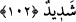

getirdi. Böyle bir durum, gerçekten en büyük helâklerden ve en şiddetli hüsranlardandır.
102. İşte Rabb’in zulmeden memleketleri yakaladığı zaman böyle yakalar.
Doğrusu O’nun yakalaması çok acı ve pek çetindir.
“İşte” yukarıda beyân edilen yakalamaya benzer şekilde “Rabbin zulmeden
memleketleri yakaladığı zaman böyle yakalar” esâsen yakalanan memleketlerin halkı
olduğu halde bu yakalamanın sonuçları o memleketlerde ortaya çıktığı için âyette
memleketler yakalanıyormuş gibi gösterilmektedir.
Bütün zâlimlere ibret olsun diye, bu kasabaların halkını sırf zulüm ve küfürleri
sebebiyle yakalayıp cezalandırmıştır.
“Doğrusu O’nun yakalaması, çok acı ve çok çetindir!” Yakalanan kimse için çok
zor, sıkıntı ve acı verici, kendisinden kurtulma ümidi olmayan bir cezâdır.
Ebû Mûsâ (r.a.)’dan Hz. Peygamber (s.a.)’in şöyle buyurduğu rivâyet edilmiştir:
“Allah zâlimlere mühlet verir. Ama yakaladığı zaman da kesinlikle bırakmaz.” Hz.
Peygamber (s.a.) ardından “İşte Rabb’in zulmeden memleketleri yakaladığı zaman... ”
âyetini okudu.”[166]
Bir kimsenin zulüm rüzgarı an be an olursa
Mazlumların ışığını söndürür
O kimse korkmaz ki Hak Teâlâ,
Gerçi geç azâb eder, ama şiddetli azâb eder
Allah Teâlâ zâlimi kurtarmaz, fakat mühlet tanır ve nefsinin eline bırakır. Nefsinin
emmâreliği sebebiyle de hem kendi nefsine hem de başkalarının nefislerine zulmeder.
Allah Teâlâ da adâleti gereği onları muâheze eder. Ancak Allah bir kuluna rahmet ve
ihsan nazarıyla bakarsa, inâyetinin nûru ile kulun nefsinin emmâreliğini yok eder.
Böylece bu kulun nefsi, şeriatın emrini dinler hâle gelir ve âhiret azâbından kurtulma,
yüce derecelere ve yakınlıklara erişme gâyesi dışında hiçbir gâye ile hareket etmez
olur. Bu bakımdan günah işleyen herkesin Rablerinin yakalamasından çekinerek hemen
tevbe etmesi, daha sonra yaparım, ederim demeyi terk etmesi gerekir. Çünkü bir
hadiste: “Daha sonra yaparım diyenler helâk olmuştur.”[167] buyrulmuştur.
Tevbeyi kabul etmek, kerem sâhibi Rabb’in işidir.
Tevbede acele et! Âfetlerle doludur çünkü te’hir.